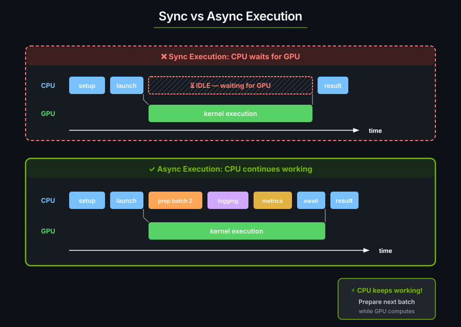

7. Intro to Async Execution#
Note: These examples use
tokio, but cuTile works with other async runtimes.
The sync API blocks the CPU until the GPU finishes:
let launcher = hello_world_kernel();
launcher.grid((2, 2, 1)).sync_on(&stream)?; // CPU waits here!
// CPU blocked until GPU finishes

With async, the CPU can do other work while the GPU computes:
Preparing the next batch while the current one computes.
Pipelining multiple operations.
Overlapping data transfer with computation.
Multi-GPU coordination.
DeviceOp#
DeviceOp describes GPU work without executing it. .await or .sync_on(.)
executes the operation; tokio::spawn can run the future produced by
into_future() or .schedule(...).
// This creates a DeviceOp, but doesn't execute yet!
let tensor_op = api::ones(&[1024, 1024]); // Returns impl DeviceOp
// Nothing has happened on the GPU yet...
// NOW it executes:
let tensor: Tensor<f32> = tensor_op.sync_on(&stream)?; // Sync API
// or
let tensor: Tensor<f32> = tensor_op.await?; // Async API
Sync vs Async APIs#
In cutile, a DeviceOp can be executed with either sync or async APIs. Given a particular operation op:
API |
Description |
|---|---|
|
Immediately executes |
|
Immediately executes |
|
Immediately executes |
|
Submits the operation's future to the async runtime, returning a handle that can later be awaited. Non-blocking. Can only be called from within an async context. |
Note: An async context is any code appearing in a block defined with the
asynckeyword, e.g.async fn ...,async { ... },async || { ... }.
Async Vector Addition#
use cutile::api::{ones, zeros};
use cutile::tensor::{Tensor, ToHostVec, Unpartition};
use cutile::tile_kernel::{PartitionOp, TileKernel, ToHostVecOp};
use cuda_async::device_operation::*;
use cuda_async::error::DeviceError;
use std::sync::Arc;
#[cutile::module]
mod async_add_module {
use cutile::core::*;
#[cutile::entry()]
fn add<const S: [i32; 2]>(
z: &mut Tensor<f32, S>,
x: &Tensor<f32, {[-1, -1]}>,
y: &Tensor<f32, {[-1, -1]}>
) {
let tile_x = x.load_like(z);
let tile_y = y.load_like(z);
z.store(tile_x + tile_y);
}
}
use async_add_module::add;
#[tokio::main]
async fn main() -> Result<(), DeviceError> {
let x: Arc<Tensor<f32>> = ones(&[32, 32]).map(Into::into).await?;
let y: Arc<Tensor<f32>> = ones(&[32, 32]).map(Into::into).await?;
// Unified launcher: pass output partition and inputs directly.
let z_host: Vec<f32> = add(
zeros(&[32, 32]).partition([4, 4]), // Output, partitioned into tiles
x, // Input x (Arc<Tensor> via IntoDeviceOp)
y, // Input y
)
.first()
.unpartition()
.to_host_vec()
.await?;
println!("z[0] = {} (expected 2.0)", z_host[0]);
Ok(())
}
Output:
z[0] = 2 (expected 2.0)
Overlapping Work with Spawn#
.await suspends the current task until the operation completes, freeing its
thread to run other tasks. tokio::spawn starts a separate task and returns a
handle immediately. Await that handle when you need the result.
#[tokio::main]
async fn main() -> Result<(), DeviceError> {
let batch1_op = prepare_batch(1); // Returns DeviceOp
let batch2_op = prepare_batch(2); // Returns DeviceOp
let batch1 = batch1_op.await?;
let result1_op = process_kernel(batch1);
let result1_handle = tokio::spawn(result1_op.into_future()); // Non-blocking
// batch 2 data can be prepared while batch 1's kernel runs
let batch2 = batch2_op.await?;
let result2 = process_kernel(batch2).await?;
let result1 = result1_handle.await.expect("task panicked")?;
Ok(())
}
Composing DeviceOps#
Unified Kernel Launcher#
The kernel launcher accepts both DeviceOp and plain values directly — no zip! needed:
// Pass output partition and inputs directly.
let result = kernel(output_op.partition([4, 4]), input1, input2)
.first() // Extract the output
.unpartition()
.await?;
zip! — Combine Operations Manually#
For cases where you need explicit control, zip! combines multiple DeviceOps into a tuple:
use cuda_async::device_operation::*;
let combined = zip!(op_a, op_b, op_c);
let (a, b, c) = combined.await?;
Choosing between sync and async#
Scenario |
Use Sync |
Use Async |
|---|---|---|
Simple scripts |
✓ |
|
Interactive exploration |
✓ |
|
Production pipelines |
✓ |
|
Multi-batch processing |
✓ |
|
Multi-GPU workloads |
✓ |
|
Overlapping compute/transfer |
✓ |
Start with sync. Use async when you have work to overlap.
Borrowed Inputs and Spawn Safety#
Kernel &Tensor params accept three input forms: Tensor<T>, Arc<Tensor<T>>,
and &Tensor<T>. Borrowed inputs (&Tensor<T>) work with .sync_on() and
.await, but the compiler rejects them with tokio::spawn:
let weights: Tensor<f32> = api::ones(&[1024]).sync_on(&stream)?;
// OK — borrow is contained in the sync call.
let result = my_kernel(out, &weights).sync_on(&stream)?;
// OK — borrow checker ensures weights outlives the await.
let result = my_kernel(out, &weights).await?;
// COMPILE ERROR — &weights is not 'static, so the future can't be spawned.
let handle = tokio::spawn(my_kernel(out, &weights).into_future());
// ^^^^^^^^ borrowed value does not live long enough
This is enforced at compile time by Rust's lifetime system. If you need to
spawn, use Arc<Tensor<T>> instead:
let weights: Arc<Tensor<f32>> = api::ones(&[1024]).sync_on(&stream)?.into();
let handle = tokio::spawn(my_kernel(out, weights).into_future()); // OK — Arc is 'static
Key Takeaways#
Concept |
What It Means |
|---|---|
DeviceOp |
A description of GPU work, not yet executed |
.await |
Execute the operation and get the result |
Async enables overlap |
CPU can do work while GPU computes |
Unified launcher |
Kernel functions accept DeviceOps and plain values directly |
zip! |
Combine multiple operations into a tuple |
.then() |
Chain follow-up work on the same stream |
Exercise 1: Async SAXPY#
Convert the SAXPY kernel to use the async API.
Exercise 2: Parallel Tensor Creation#
Use zip! to create 4 tensors in parallel.
Answer
let (a, b, c, d) = zip!(
ones(&[100, 100]).map(Into::into),
zeros(&[100, 100]).map(Into::into),
randn(0.0, 1.0, [100, 100], None).map(Into::into),
arange(10000).map(Into::into)
).await?;
Exercise 3: Measure the Difference#
Time a sync version vs. an async version with overlapped work. Use std::time::Instant to measure.
See also#
Device Operations — full treatment of
DeviceOp, streams, and schedulingHost API — combinator signatures (
.then(),.shared(),unzip,zip!) and the full host-side API